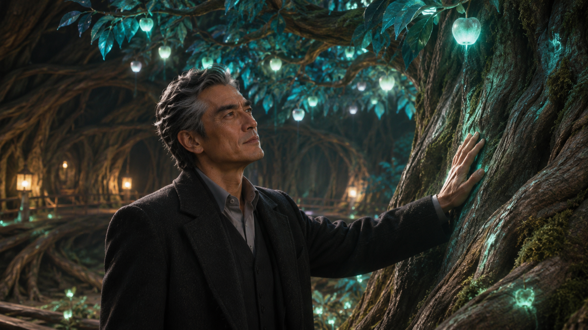
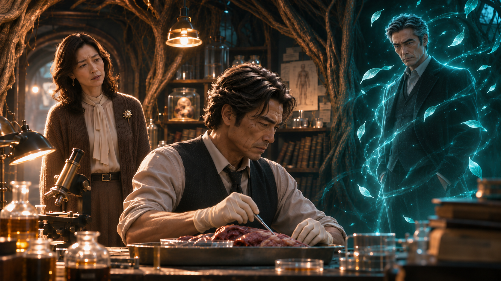
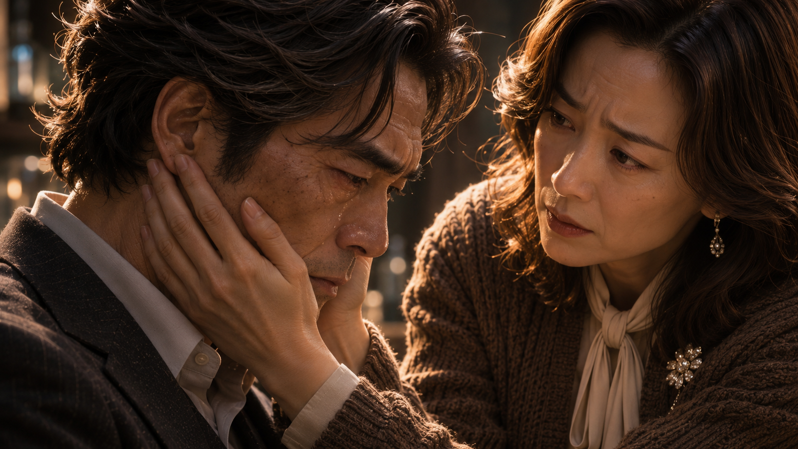
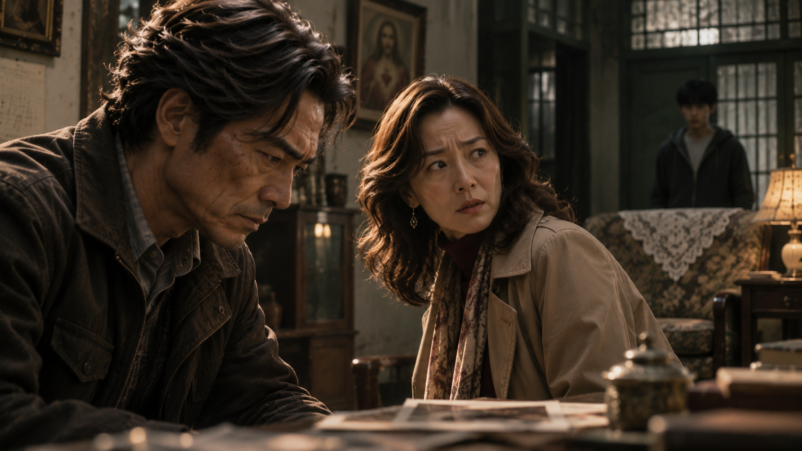
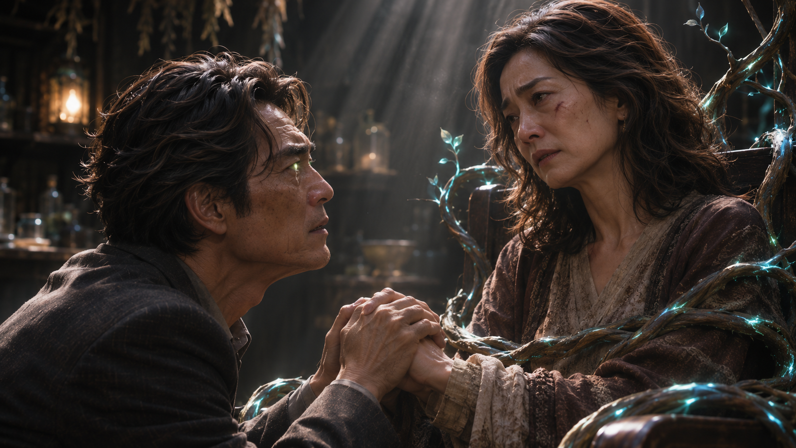
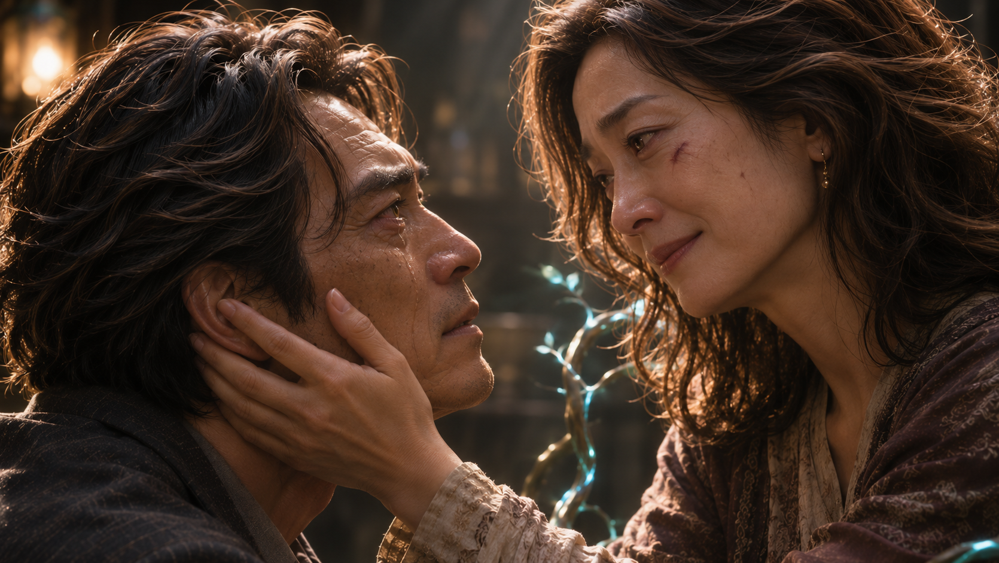
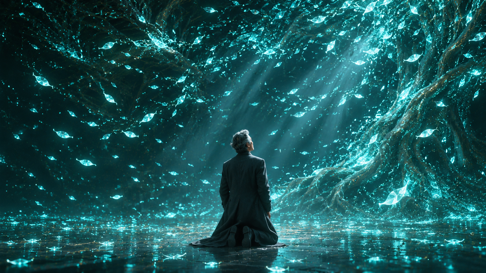

WHITE MAGIC ART STUDIO
第二十一章
記得
同一時間・梁家大宅後院・花園
夜色籠罩著梁家大宅。
後院的花園裡，晉輝獨自來到宅邸後方的花院。
庭院裡的植物在夜風中輕輕搖曳。
他再次走向花院中央的那棵可以通往地道的老樹，
他沉默了許久。
隨後，緩緩抬起手。
貼上粗糙的樹皮。
腳下的土地傳來細微震動。
埋藏在泥土深處的樹根開始蠕動，彼此交錯、分離，將草地向兩側推開。
一道通往地底的階梯，逐漸顯露出來。
晉輝沒有猶豫，沿著階梯走了下去。
隨著他的身影沒入地底，身後的樹根又緩緩合攏。
四周重新歸於寂靜。
地下深處，一棵巨大的樹木靜靜生長著。
它的枝幹盤踞在幽暗的空間裡，樹冠間垂掛著一顆顆散發微光的果實。
忘憂木。
那是晉輝親手種下的術之木。
也是這些年來，替他保存無數記憶的地方。
晉輝走到樹前，抬頭望著那些果實。
有些已經在這裡懸掛了十年。
他伸出手，輕輕撫過粗糙的樹皮。

「……是時候了。」
枝葉微微晃動。
一顆果實忽然亮了起來。
晉輝抬起頭。
下一瞬，四周的景物開始扭曲。
牆壁、地面、枝葉，逐漸失去原本的輪廓。那些被封存在果實中的聲音與畫面，如同水面上的倒影，一點一點浮現。
他沒有抵抗。
因為他知道，自己即將看見什麼。
多年前・梁家大宅地下研究室
熟悉的燈光映入眼簾。
晉輝發現自己站在一間研究室裡。
這裡還不是後來種植忘憂木的地方。
金屬工作檯、檢測儀器、排列整齊的研究資料，以及牆上密密麻麻的紀錄，佔據了整個空間。
他看見了年輕一些的自己。
那時的晉輝正站在工作檯前，專注地檢查幾名因不明病症而死亡的患者。
他們身上留有異常的傷痕，部分組織呈現出難以解釋的變化。
研究室裡只聽得見儀器規律的運轉聲。
直到一道熟悉的聲音響起。
「這些人……就是你說的那些狂魔症患者嗎？」
晉輝轉過頭。
張慧萍站在研究室門口。
她望著工作檯上的研究資料，眉頭微微皺起。
「是。」
記憶中的晉輝沒有停下手邊的工作。
「據說，他們在發病前，都曾經聽過一捲奇怪的錄音帶。」
「錄音帶？」
「目前還無法確認兩者的關係。但這些人的狀況……」
他停頓片刻。
「不太像一般的惡魔附身。」
慧萍走近工作檯。
「所以，你才想讓孩子們離開台灣？」
晉輝的動作停了一瞬。
「……看來妳不是單純來探班的。」
「景皓剛剛跟我說了。」
慧萍看著他。
「你希望他去美國。」
晉輝沒有回答。
「這麼大的事情，你怎麼沒有先跟我討論？」
他繼續做手邊的研究。

「晉輝？」
依然沒有回應。
「梁晉輝，你現在是要假裝沒聽見嗎？」
晉輝終於嘆了口氣。
他放下手中的器具，摘下手套。
「柴克．安德烈。」
慧萍一愣。
「什麼？」
「紐約黑霧事件中，首度現身的雷翼聖術師。」
晉輝走到一旁，從資料夾裡抽出一份文件。
「美國聖術會雖然封鎖了消息，但我還是拿到了相關名單。」
他將文件遞給慧萍。
「他出生於一九八七年十月。」
慧萍低頭看著資料。
「……所以呢？」
「景皓是一九八四年十一月出生的。」
晉輝望著她。
「也是綠色亞斯蘭之星出現的那個夜晚。」
慧萍的神情逐漸變了。
「古籍記載，當代第一位翼聖術師誕生後，每隔七個月，就會有下一位翼聖術師降生。」
晉輝指著文件上的日期。
「直到六翼全部誕生。」
研究室安靜了下來。
慧萍緩緩抬頭。
「你的意思是……」
「景皓是這個世代第一位誕生的翼聖術師。」
晉輝低聲說道。
「而柴克，是最後一位。」
他停了一下。
「雷翼。」
慧萍的目光重新落回文件。
許久，她才喃喃念出一段熟悉的預言。
「在那終焉的世代，金色亞斯蘭之星，將是六顆星之中最後出現的一顆……」
她猛地抬起頭。
「晉輝。」
「……」
「你不要告訴我，你又開始在意那個預言了。」
晉輝沉默。
「我跟你說過很多次了。」
慧萍放下文件，語氣變得嚴肅。
「我出生在靈媒家族，嫁給你以前，就已經是一名烙印者。」
「我知道。」
「那你應該也知道，我親眼見過多少人因為那些預言而失去方向。」
她望著丈夫。
「有些人為了逃避預言，反而做出自己原本根本不會做的事。」
晉輝垂下眼。
「但如果預言跟我們的孩子有關，我就不能不在意。」
「晉輝……」
「在終焉的時代，一位誕生於亞斯蘭之星照耀下的聖術師，將受到撒旦碎片的引誘，成為魔皇，並帶來前所未見的災厄。」
他一字一句地念出那段預言。
「現在六翼都已經誕生了，慧萍。」
「那又怎麼樣？」
慧萍的聲音堅定。
「那個孩子絕對不會是我們的孩子。」
晉輝沒有回答。
「你對景皓沒有信心嗎？」
「不是信不信任景皓的問題。」
「那是什麼問題？」
晉輝轉過身，望向工作檯。
「我擔心的是……有人會利用這件事。」
慧萍怔了一下。
「什麼意思？」
「狂魔症。」
晉輝重新拿起桌上的研究報告。
「亞洲聖術會之所以請我調查，就是因為他們懷疑這不是一般的疾病。」
他翻開其中一頁。
「我檢查過的患者裡，有普通人，也有聖術師。」
「而他們在發病後，出現了極為相似的異常行為。」
慧萍皺起眉。
「你查到原因了？」
「還沒有找到源頭。」
晉輝搖頭。
「但我幾乎可以確定，這是某種心智聖術墮化後的產物。」
「心智聖術……」
「而且很可能與木之聖術有關。」
慧萍望向那些研究紀錄。
「你的意思是……」
「台灣可能正潛伏著一個能夠干涉人類心智的邪惡存在。」
晉輝的聲音低了下來。
「如果這個推測是真的，事情就遠比我們想像的嚴重。」
「亞洲聖術會知道嗎？」
「知道一部分。」
「那為什麼沒有任何消息？」
「為了避免恐慌，這些調查目前都被列為機密。」
他看向慧萍。
「知道這些細節的人很少。」
慧萍沉默了片刻。
她忽然想起什麼。
「所以……這就是你成立醫院，還有梁家班的原因？」
晉輝沒有立刻回答。
研究室的燈光映在他臉上。
「有一場戰爭，可能快要來了。」
慧萍看著丈夫。
這一次，她終於明白了。
「所以你才想讓孩子們全部離開台灣？」
晉輝微微一怔。
「你答應景毅去美國讀書，又說服景皓去美國……」
她的語氣逐漸急促。
「還有景瑜。」
「……」
「如果不是你一直告訴她韓國有多需要木之聖術師，她會主動請命去那裡嗎？」
晉輝移開目光。
慧萍難以置信地看著他。
「你早就安排好了，對不對？」
「至少在國外，他們比較安全。」
「所以你真的打算把他們全部送走？」
「景皓待在景毅身邊，我比較放心。」
晉輝說道。
「景毅的木瞳術能保護他不受心智能力影響。至於景瑜……韓國目前的情況，至少比台灣穩定。」
「梁晉輝！」
慧萍忍不住提高音量。
「拉比讓我們成為一家人，不是要你把所有人分開！」
「我只是想確保他們平安！」
「那你有沒有問過他們想不想離開？」
晉輝一時語塞。
「你有沒有想過，景皓為什麼愈來愈不願意跟你說話？」
「……」
「景毅為什麼老是想證明自己？景瑜又為什麼什麼事情都不肯告訴你？」
她走到丈夫面前。
「你一直想替他們安排好所有事情。」
「可是你有沒有想過，他們需要的可能不是這些？」
晉輝低著頭。
慧萍的聲音放緩了一些。
「你到底在害怕什麼？」
研究室裡安靜了很久。
終於，晉輝開口。
「……我不相信。」
慧萍怔住。
「什麼？」
「我沒有辦法相信，一切都會沒事。」
「晉輝……」
「因為我知道，被黑暗引誘是什麼感覺。」
他的聲音有些沙啞。
慧萍看著他。
「你在說什麼？」
晉輝閉上眼。
過了好一會兒，他才艱難地開口。
「慧萍。」
「嗯？」
「我做了一件很可怕的事。」
她的表情逐漸凝重。
「……什麼事？」
晉輝抬起頭。
「我跟一位魔君，做了一場交易。」
慧萍愣住了。
「魔君？」
「嗯。」
「你為什麼會跟那種存在交易？」
「我……」
晉輝張了張嘴。
卻沒有立刻回答。
「我不知道。」
「什麼意思？」
「我不記得交易的內容。」
慧萍望著他，眼神充滿困惑。
「但我知道，我確實跟他做過交易。」
晉輝緩緩坐到椅子上。
「讓雙方忘記交易細節，卻保留交易存在的認知……是我們當時約定的條件之一。」
「為什麼要這麼做？」
「我不知道。」
他低頭看著自己的雙手。
「我們都知道，彼此還欠著對方一份人情。」
「卻誰也不知道，那份人情究竟是什麼。」
慧萍一時說不出話。
「我甚至不知道自己為什麼會答應這種條件。」
晉輝苦笑了一下。
「但我總覺得……」
他停住了。
「覺得什麼？」
「好像失去了什麼。」
研究室裡，只剩儀器低沉的運轉聲。
「有時候，我會突然感到很害怕。」
晉輝緩緩握緊雙手。
「我不知道那份恐懼從哪裡來。」
「也不知道自己究竟做了什麼。」
「但我知道，那絕對不是一件小事。」
慧萍走到他身旁。
「晉輝……」
「我年輕的時候，以為只要力量夠強，就能解決所有問題。」
他垂著頭。
「後來我才知道，有些事情不是力量能解決的。」
慧萍沒有打斷他。
「我一直告訴自己，不能再犯錯。」
「不能再讓任何人受到傷害。」
他抬起頭，眼眶已經泛紅。
「可是慧萍……」
「我現在連自己做過什麼都不知道。」
他的聲音微微顫抖。
「我真的很怕。」
慧萍輕輕握住他的手。
「怕什麼？」
晉輝望著她。
「怕有一天……」
他停了很久。
「我會失去妳們。」
慧萍的神情逐漸柔和。
她終於明白，這些年丈夫身上那股揮之不去的焦慮，究竟從何而來。
「……你以為我都沒有發現嗎？」
晉輝抬頭。
「什麼？」
「你一直想把每件事情都做對。」
慧萍坐到他身旁。
「我知道，你年輕的時候曾經被人當成武器。」
晉輝的目光微微一沉。
「你做過很多違背自己心意的事。」
「直到上一任雷翼把你從那個組織裡救出來。」
她輕輕握緊他的手。
「從那之後，你就一直想證明，自己能夠成為一個正確的人。」
晉輝沉默。
「可是晉輝……」
「你有沒有想過，你給自己的壓力，也正在影響我們的孩子？」
他沒有回答。
「景皓每天都在努力。」
慧萍輕聲說。
「可是無論他做得多好，你總是還有下一個要求。」
「我只是希望他能……」
「我知道。」
慧萍打斷了他。
「我知道你希望他成為一個足以承擔木翼使命的人。」
「可是他也是我們的兒子。」
晉輝低下頭。
「景毅也是。」
她繼續說。
「那孩子明明很喜歡你，卻總覺得自己比不上哥哥。」
「景瑜則是愈來愈少跟你談自己的事情。」
慧萍望著丈夫。
「他們不是不愛你。」
「只是漸漸不知道，該怎麼跟你相處。」
晉輝的眼神動搖了。
「你愈害怕失去他們，就愈想替他們決定所有事情。」
慧萍的聲音微微顫抖。
「可是你沒有發現嗎？」
「你正在把他們推得愈來愈遠。」
晉輝閉上眼。
許久，他才低聲說道：
「所以我才想自己調查。」
慧萍一愣。
「什麼？」
「至少……再給我幾年。」
晉輝抬頭看著她。
「讓我把狂魔症、魔君，還有那些預言都調查清楚。」
「然後呢？」
「……」
「查清楚以後，你又打算一個人承擔？」
晉輝沒有回答。
慧萍深吸一口氣。
「晉輝，景皓是木翼。」
「我知道。」
「他將來或許真的要帶領很多聖術師。」
她看著丈夫。
「但我們身為父母的責任，不只是訓練他變得強大。」
「更重要的是，讓他知道自己可以依靠拉比。」
晉輝的表情逐漸變了。
「你以前不是最常這樣教孩子們嗎？」
「……」
「你告訴景毅，我們就像月亮，力量不是來自自己，而是來自拉比。」
慧萍輕聲問道：
「那你現在呢？」
晉輝的嘴唇微微顫動。
「如果連他的父親……」
他低下頭。
「都不知道該怎麼面對拉比了。」
「又要怎麼教他相信呢？」
慧萍怔住。
她從未聽過丈夫用這樣的語氣說話。
晉輝勉強笑了笑。
「妳知道嗎？」
「景皓每次訓練的時候，都會用他的木瞳術感受我的情緒。」
慧萍靜靜聽著。
「他一定覺得，我對他很失望吧。」
「……難道不是嗎？」
晉輝搖了搖頭。
「不是。」
他望向研究室的地面。
「我失望的……」
聲音停住了。
過了很久，他才說完。
「一直都是我自己。」
慧萍的眼眶泛紅。
「晉輝……」
「我看著他那麼努力。」
「看著他一次又一次站起來。」
晉輝的聲音愈來愈低。
「我知道他很辛苦。」
「可是每次看見他，我就會想到……」
他握緊拳頭。
「如果有一天，連我都保護不了他，該怎麼辦？」
慧萍伸手，輕輕覆在他的拳頭上。
晉輝終於抬起頭。
「景皓出生的那一天……」
他的聲音沙啞。
「我第一次抱著他，就覺得這孩子怎麼會這麼小。」
慧萍望著他。
「那時候就知道，我可以為他付出我的全部。」
他停了一下。
「後來景毅出生。」
嘴角浮現一絲極淡的笑意。
「那孩子抓著我的手指，怎麼樣都不肯放。」
「我知道。」慧萍輕聲回答。
「妳那時候還笑我，說我被一個嬰兒抓住就動不了了，因為我的靈魂也被這孩子緊緊抓住了。」
慧萍忍不住笑了。
晉輝的目光逐漸柔和。
「還有景瑜。」
「她剛出生的時候，眼睛真的很像妳。」
他望著慧萍。
「每次看著她，我都會想……」
他的聲音哽住。
「我到底有多幸運，才能擁有妳們。」
慧萍眼中的淚水終於落下。
「可是我現在……」
晉輝低下頭。
「連自己究竟做錯了什麼，都不敢去想。」
他深吸一口氣。
「我不知道什麼才是正確的。」
「只知道如果有一天，我真的失去妳們任何一個……」
他再也說不下去。
慧萍伸出雙手，輕輕捧住丈夫的臉。

「晉輝。」
他沒有抬頭。
「看著我。」
晉輝緩緩望向她。
慧萍的眼眶同樣泛紅。
「你知道嗎？」
「我嫁給你的時候，從來沒有期待你成為一個不會犯錯的人。」
晉輝怔住。
「我知道你有很多事情放不下。」
「也知道你一直很努力。」
她輕輕擦去他眼角的淚水。
「可是我真的不希望，有一天你連我們都不敢依靠了。」
晉輝閉上眼。
慧萍將他擁入懷中。
他僵硬的肩膀，終於慢慢放鬆。
許久，慧萍才再次開口。
「所以……」
「這件事，讓我陪你一起調查吧。」
晉輝猛地抬頭。
「慧萍！」
「怎樣？」
「妳剛剛不是才說很危險嗎？」
「我有說不危險嗎？」
「那妳還……」
「梁晉輝。」
慧萍皺起眉。
「你是不是忘記，你老婆也不是什麼普通人？」
晉輝一時語塞。
「我可是靈媒家族出生的。」
她望著他。
「而且，這件事情也關係到我們的孩子。」
「但……」
「沒有但是。」
慧萍伸手握住他的手。
「你休想再把我推開。」
晉輝看著她。
「不是只有你深愛我們的孩子。」
她的聲音堅定。
「我也一樣。」
「所以，不管接下來要面對什麼……」
慧萍輕輕握緊他的手。
「我們一起。」
記憶裡的晉輝沉默了很久。
最後，緩緩點頭。
而站在一旁的現在的晉輝，始終沒有移開目光。
他看著妻子熟悉的笑容。
那是他曾經無數次想要再次看清的模樣。
「……慧萍。」
他輕聲喚道。
記憶中的妻子沒有回頭。
晉輝垂下眼。
「如果那時候……」
他停了下來。
許久，才低聲說道：
「我沒有答應妳就好了。」
話音剛落，研究室的燈光忽然閃爍。
周圍的景物開始崩解。
一道無形的力量，將他的意識拖向更深處。
晉輝沒有抵抗。
多年前・某處老舊透天厝
潮濕的空氣迎面而來。
晉輝睜開眼。
眼前是一間老舊的透天厝客廳。
牆面有些斑駁，家具陳舊，空氣中瀰漫著淡淡的霉味。
一幅天主像掛在牆上。
桌上的聖經攤開著，幾張書頁凌亂地散落在旁。
客廳中央，幾名大人正圍著一名七、八歲的男孩。
孩子的身體不斷顫抖，神情痛苦，口中發出含糊不清的聲音。
一位牧師站在旁邊，手握十字架，緊張地禱告著。
「主啊……求祢保護這個孩子……」
他的聲音微微顫抖。
記憶中的晉輝與慧萍走進客廳。
慧萍看了一眼男孩的狀態，神情立刻變得凝重。
「晉輝。」
「嗯。」
「那孩子身上的東西……不太對勁。」
晉輝點頭。
他走上前，從衣袖裡取出一小撮翠綠色粉末。
輕輕一揮。
粉末在空中散開。
細微的綠光緩緩落下，客廳裡的人陸續陷入沉睡。
很快地，只剩下晉輝、慧萍，以及那名男孩仍然清醒。
晉輝走到男孩面前。
「不用害怕。」
男孩抬起頭，目光卻沒有焦點。
「我不是來傷害你的。」
晉輝蹲下身。
「我是聖術師。」
他將手掌輕輕按在地面。
一道道細小的藤蔓從地板間生長出來，沿著男孩身旁交錯，形成一座精密的封印陣。
晉輝的雙瞳泛起深綠色微光。
木之聖術逐漸將男孩身上的異常氣息分離。
黑霧在封印陣上方扭曲，發出低沉而模糊的聲音。
「你……是聖術師……」
晉輝神情不變。
「離開這孩子。」
黑霧劇烈翻湧。
下一瞬，數道木樁從封印陣中升起，將那團黑霧牢牢困住。
翠綠色的光芒迅速收攏。
黑霧終於消散。
男孩的身體漸漸放鬆，沉沉睡去。
晉輝吐了口氣。
「……結束了。」
他轉頭望向慧萍。
卻發現妻子正盯著客廳另一端。
「等等。」

她的聲音忽然變了。
她與生俱來的第六感告訴她有不妙的事要發生，
晉輝順著她的視線看去。
沙發後方，一名約莫十五歲的少年，正緩緩站起身。
他的動作有些僵硬。
眼睛緊閉，嘴唇卻在不停顫動。
彷彿正在說些什麼。
晉輝皺起眉。
「那孩子……」
他往前走了一步。
「晉輝！」
慧萍突然喊住他。
然而，少年依然無聲地動著嘴唇。
晉輝正想靠近確認。
下一瞬——
「不要過去！」
慧萍猛地衝上前，將丈夫往後推開。
晉輝踉蹌了一步。
「慧萍？！」
她卻突然僵在原地。
少年嘴唇間那段幾乎聽不見的低語，彷彿越過了周圍所有聲音。
斷斷續續的字句，落入她耳中。
「……花開在血的湖畔……」
「……祂正在等……」
「……聽見的人……」
「……將成為樂園的種子……」
慧萍的瞳孔驟然收縮。
一絲極淡的紅光，在她眼底閃過。
她緩緩跪倒在地。
「……樂園……」
晉輝猛地回頭。
「慧萍？」
她沒有回答。
只是低著頭，嘴唇不受控制地顫動。
「樂園……」
「我聽見了……」
「慧萍！」
晉輝立刻衝上前，將她扶住。
她的雙手冰冷，眼神失去了焦點。
「看著我！」
他握住妻子的肩膀。
「慧萍！我是晉輝！」
她的眼睛微微轉動。
卻沒有真正看向他。
晉輝抬起頭。
那名少年仍然站在沙發後方。
嘴唇緩緩開合。
沒有聲音。
晉輝的臉色瞬間沉了下來。
木之聖術猛然升起，將少年與他們隔開。
他再度低頭看向懷中的妻子。
「慧萍……」
她的眼角滑下一滴淚。
卻仍然喃喃重複著那兩個字。
「……樂園……」
晉輝抱緊了她。
「不……」
他的聲音顫抖。
「不會的……」
站在記憶之外的晉輝，靜靜看著這一幕。
他沒有走近。
只是看著當年的自己，跪在客廳中央，徒勞地呼喚妻子的名字。
那些聲音，他從來沒有真正忘記。
只是已經很久，沒有聽得這麼清楚了。
他閉上眼。
「……對不起。」
四周的景物再次扭曲。
十年前・梁家大宅地下密室
一扇熟悉的門，出現在眼前。
晉輝站在門外。
他看見了當年的自己。
也看見了景皓。
年輕的景皓站在走廊裡，眼眶泛紅，緊緊咬著牙。
父子兩人之間，隔著一道沉重的沉默。
最後，景皓轉過身。
他沒有再回頭。
腳步聲沿著走廊逐漸遠去。
記憶中的晉輝站在原地。
直到那道背影消失，才緩緩推開密室的門。
現在的晉輝跟了進去。
密室裡，燈光昏黃。
一張椅子擺在中央。
慧萍坐在椅上，數道忘憂木藤蔓交錯纏繞，形成一道封印。
她低垂著頭。
聽見腳步聲，忽然抬起臉。
原本溫柔的眼神，此刻充滿陌生的躁動。
她掙扎著，發出含糊不清的聲音。
「……樂園……」
晉輝停下腳步。
「慧萍。」
藤蔓劇烈震動。
他抬起手。
深綠色的光芒沿著藤蔓迅速蔓延，將封印重新穩定下來。
晉輝走到妻子面前，將手掌輕輕貼在她額頭。
「……再一下就好。」
他的聲音沙啞。
木之聖術逐漸滲入封印。
那些混亂的氣息，在綠光中慢慢沉寂。
慧萍的身體終於放鬆。
她低下頭，安靜了下來。
晉輝收回手。
疲憊地跪坐在地。
密室裡只剩下他的喘息聲。
過了許久。
「……晉輝？」
一道極輕的聲音響起。
晉輝猛地抬頭。
慧萍微微睜開眼睛。
她看著丈夫，眼神短暫恢復了往日的清明。
「……是你嗎？」
晉輝立刻握住她的手。
「是我。」

他努力讓自己的聲音保持平穩。
「我在這裡。」
慧萍望著他。
嘴角勉強浮現一絲笑意。
「你看起來……好累。」
晉輝低下頭。
「別說話。」
「景皓呢？」
他握著妻子的手，忽然僵住。
「……他剛剛來過。」
慧萍看著他。
「是嗎……」
「他不該回來的。」
晉輝低聲說道。
「至少現在不該。」
慧萍沉默了片刻。
「你們又吵架了？」
晉輝沒有回答。
她輕輕嘆了口氣。
「你啊……」
晉輝閉上眼。
「我只是……」
他說不下去。
慧萍望著丈夫。
「老公。」
「嗯？」
「如果不是你一直用聖術封住我……」
她停了一下。
「我可能早就失去控制了。」
晉輝猛地抬頭。
「不要說這種話。」
「可是這是事實。」
「我叫妳不要說了！」
他的聲音突然提高。
慧萍怔了一下。
晉輝立刻低下頭。
「……對不起。」
她沒有責怪他。
只是輕輕握住他的手。
「晉輝。」
「……」
「這不是你的錯。」
晉輝搖頭。
「如果那天我沒有靠近那個少年……」
「你不知道會發生這種事。」
「如果我沒有讓妳跟我一起去……」
「是我自己決定要去的。」
「如果我早一點發現……」
「晉輝。」
慧萍打斷了他。
「你已經做得夠多了。」
他忽然笑了一聲。
那笑聲裡沒有半點喜悅。
「夠多？」
晉輝抬起頭。
「我讓自己的妻子被關在這裡。」
他望著那些藤蔓。
「每天只能靠聖術，讓妳短暫恢復清醒。」
「而我連這種情況還能維持多久，都不知道。」
慧萍的眼神微微黯淡。
「所以……」
她輕聲說道。
「讓我走吧。」
晉輝愣住。
「……什麼？」
「你知道我在說什麼。」
「不可能。」
他立刻搖頭。
「我一定會找到辦法。」
「晉輝……」
「亞洲聖術會還有很多研究沒有完成。」
他急促地說著。
「我也還沒有查到狂魔症真正的源頭。」
「只要再給我一點時間……」
慧萍靜靜看著他。
「你已經找了很久了。」
晉輝停住。
「我知道。」
她輕聲說。
「我知道你一直沒有放棄。」
他握緊她的手。
「所以妳也不要放棄。」
慧萍的眼眶漸漸泛紅。
「晉輝。」
「……」
「我真的很怕。」
他怔住。
慧萍低頭看著自己的雙手。
「每次清醒的時間愈來愈短，我都不知道下一次還能不能認得你。」
她的聲音有些顫抖。
「我也怕有一天，自己會傷害景皓、景毅，還有景瑜。」
晉輝搖頭。
「我不會讓那種事發生。」
「我知道你會保護他們。」
慧萍抬起頭。
「可是我不希望，你必須永遠用這種方式保護我們。」
晉輝的眼眶逐漸泛紅。
「……我不能沒有妳。」
慧萍望著他。
他終於低下頭。
「我真的不能。」
聲音幾乎聽不清楚。
「我不是個好丈夫。」
「也不是個好父親。」
「晉輝……」
「我一直以為，只要把所有事情都安排好，就不會失去任何人。」
他的眼淚落了下來。
「可是到最後……」
他再也說不下去。
慧萍伸出手，輕輕撫摸他的臉。
「你還記得嗎？」
晉輝抬頭。
「景皓剛出生的時候，你抱著他，緊張得連手都不敢動。」
晉輝怔怔地望著她。
「景毅第一次叫爸爸，你高興得整個晚上都在跟我說。」
她笑了笑。
「還有景瑜……」
慧萍的聲音變得更輕。
「你明明說女兒要寵，結果她第一次學走路跌倒，你比她還緊張。」
晉輝的嘴角微微顫動。
「……妳怎麼突然說這些？」
「因為我怕你忘記。」
她看著丈夫。
「我們曾經很幸福。」
晉輝低下頭。
「我沒有忘。」
「我知道。」
慧萍輕輕擦去他的眼淚。
「所以，不要讓這些痛苦，把那些美好的事情都蓋過去了。」
晉輝閉上眼。
「可是……」
「晉輝。」
她的聲音依然溫柔。
「拉比從來沒有離開我們。」
他猛地睜眼。
「妳為什麼還能這樣說？」
慧萍一愣。
「妳都已經變成這樣了！」
他的聲音開始顫抖。
「妳每天都在受苦！」
「而我什麼都做不到！」
慧萍靜靜看著他。
「如果祂真的愛我們……」
晉輝的眼眶通紅。
「為什麼會讓妳遇到這種事？」
密室裡安靜了下來。
慧萍沒有立刻回答。
她只是輕輕握住他的手。
「我也不知道。」
晉輝怔住。
「我不知道為什麼會發生這些事。」
她輕聲說道。
「也不知道拉比為什麼沒有讓我好起來。」
晉輝望著她。
「可是我知道，祂愛我們。」
「……」
「當祂願意把六翼之一交託給我們這個不完美的家庭時，我就明白了。」
慧萍微微笑了。
「那不是因為我們有多厲害。」
「也不是因為我們從來不會犯錯。」
她看著丈夫。
「而是祂願意愛我們。」
晉輝低下頭。
慧萍繼續說道：
「你總是覺得，自己必須把所有事情都做好。」
「可是晉輝……」
「我們本來就不是什麼都做得到的人啊。」
他沉默了。
「你以前不是最常跟孩子們說嗎？」
慧萍輕輕握緊他的手。
「聖術師的力量，不是來自自己。」
晉輝的眼淚再次落下。
「……我知道。」
「那就不要忘記。」
慧萍的聲音很輕。
「拉比一直都在。」
晉輝將額頭抵在妻子的手背上。
許久沒有說話。
直到慧萍再次開口。
「晉輝。」
「……嗯？」
「讓我最後再為這個家做一件事，好不好？」
他緩緩抬頭。
慧萍望著他。
「我不想再讓孩子們因為我受到傷害。」
「……」
「也不想讓你一輩子困在這裡。」
晉輝搖頭。
「我做不到。」
「我知道很難。」
「慧萍……」
「我也很怕。」
她的眼淚終於滑落。
「可是我更怕，有一天我連自己是誰都不記得了。」
晉輝望著她。
她伸出手，輕輕撫過他的臉頰。
「答應我。」
「……」
「以後要好好照顧孩子們。」
晉輝的嘴唇微微顫抖。
「還有你自己。」
他沒有回答。
慧萍輕輕笑了。
「你啊……」
「明明這麼大的人了，還是這麼不會照顧自己。」
晉輝終於忍不住，將臉埋進她的掌心。
慧萍靜靜陪著他。
過了很久。
她忽然輕聲說：
「你還記得，我以前常唱給孩子們聽的那首歌嗎？」
晉輝抬起頭。
「……記得。」
「我想再唱一次。」
他望著她。
慧萍微微笑了。
隨後，熟悉的旋律在密室裡緩緩響起。
「在綻放的光芒...」
她的聲音已經不像從前那樣清亮。
有些沙啞。
有些顫抖。
卻依然溫柔。
晉輝靜靜聽著。
彷彿又回到了很多年前。
那時候的梁家大宅，總是充滿孩子們的笑聲。
景皓在庭院裡練習聖術。
景毅追著哥哥跑來跑去。
景瑜坐在母親身旁，安靜地聽著她唱歌。
而他總是在忙完工作後，才終於有時間回到家裡。
有時候，慧萍會笑著責怪他回來得太晚。
有時候，孩子們早就睡著了。
但不管多晚，家裡總有一盞燈為他留著。
晉輝閉上眼。
眼淚無聲地落下。
歌聲漸漸停了。
慧萍望著他。

「晉輝。」
「……嗯。」
「我很愛你。」
他睜開眼。
慧萍微微笑著。
「也很愛我們的孩子。」
晉輝緊緊握住她的手。
「……我知道。」
她的眼神開始有些恍惚。
「永遠要記得……」
她努力維持著清醒。
「拉比與我們同在。」
晉輝望著她。
「慧萍……」
她的手指輕輕顫動。
「……答應我。」
晉輝的眼淚不斷落下。
最後，他緩緩點頭。
「……好。」
慧萍笑了。
那是他記憶中，最熟悉的笑容。
下一瞬，她的神情忽然變了。
一絲紅光從眼底浮現。
「……晉輝……」
她的聲音顫抖。
「快……」
晉輝猛地抬頭。
「慧萍！」
藤蔓開始劇烈震動。
她緊緊抓住丈夫的手。
「……拜託你……」
晉輝望著她。
手掌緩緩抬起。
深綠色的光芒，在指尖凝聚。
他卻遲遲沒有動作。
「……對不起。」
他的聲音幾乎聽不見。
「對不起……」
慧萍努力看向他。
嘴角微微揚起。
晉輝閉上眼。
熟悉的旋律，彷彿仍然在耳邊迴盪。
下一瞬——
翠綠色的光芒照亮了整間密室。
「慧萍——！」
記憶中的聲音，在光芒裡逐漸遠去。
四周的景物開始崩解。
牆壁、藤蔓、燈光，一點一點碎裂。
最後，連慧萍的身影也消失了。
現在・梁家大宅地下
晉輝猛地睜開眼。
他仍然站在忘憂木前。
只是雙腿已經無法支撐身體。
他緩緩跪了下來。
額頭抵著粗糙的樹幹。
淚水沿著臉頰滑落。
四周安靜得只剩下他的呼吸聲。
那些聲音。
那些表情。
那些曾經被他刻意留在這裡的細節。
如今，再一次清晰地出現在眼前。
慧萍責怪他不肯跟孩子商量時的神情。
她握著他的手，說要一起調查時的溫度。
還有最後那首歌。
每一個細節，他都記得了。
「……慧萍。」
晉輝輕聲喚道。
沒有回應。
他閉上眼。
許久，才緩緩開口。
「我記得……」
聲音沙啞得幾乎聽不清楚。
「我都記得……」
忘憂木的枝葉微微晃動。
晉輝抬起頭。
那些懸掛在樹冠間的果實，一顆接著一顆亮了起來。
他望著它們。
緩緩伸出手。
「……回來吧。」
第一顆果實化作微光。
隨後是第二顆。
第三顆。
一道道青綠色的光芒，從樹冠間緩緩飄落，融入晉輝的身體。
那些被他寄放在這裡的記憶，終於回到了原本的主人身上。
有些是痛苦。
有些是後悔。
也有許多，是他曾經以為自己再也不敢仔細回想的幸福。
孩子們第一次喊他爸爸的聲音。
慧萍在廚房裡哼唱的旋律。
一家人圍坐在餐桌旁的笑聲。
還有那些，他始終沒能好好說出口的話。
晉輝閉著眼。
任由記憶一點一點回到心中。
他沒有再將任何一段推開。
直到最後一顆果實，緩緩失去光芒。
整棵忘憂木開始變化。
樹枝上的葉片逐漸染上一層青藍色。
接著，一片片飄落。
樹幹與枝條也慢慢化為細碎的光點，隨著落葉一同散開。

沒有劇烈的聲響。
沒有耀眼的光芒。
那棵陪伴晉輝多年的忘憂木，就這樣一點一點消失在地下空間裡。
彷彿完成了它最後的使命。
晉輝靜靜跪在原地。
最後一片葉子，緩緩落在他的掌心。
他低頭望著。
那些曾經模糊的聲音、面容，以及再也無法挽回的時光，如今都清晰得令人心痛。
晉輝緩緩握起手掌。
葉片化作微光，從指縫間消散。
他站了起來。
眼角仍留著淚痕。
他沒有擦去。
只是靜靜望著那棵樹曾經生長的地方。
過了很久。
晉輝終於轉身，朝階梯的方向走去。
這一次——
他沒有再試著忘記。